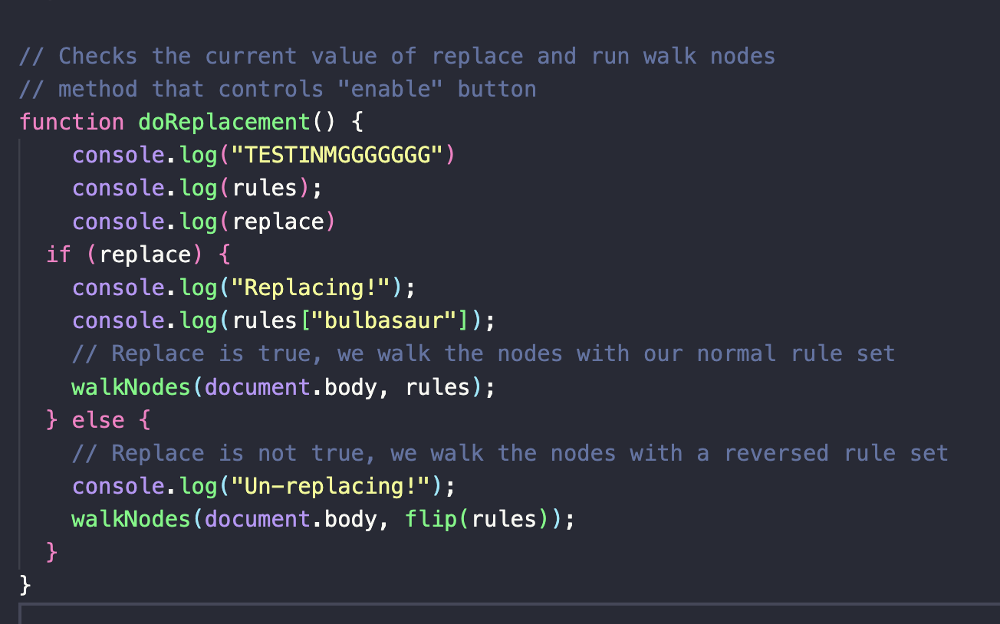
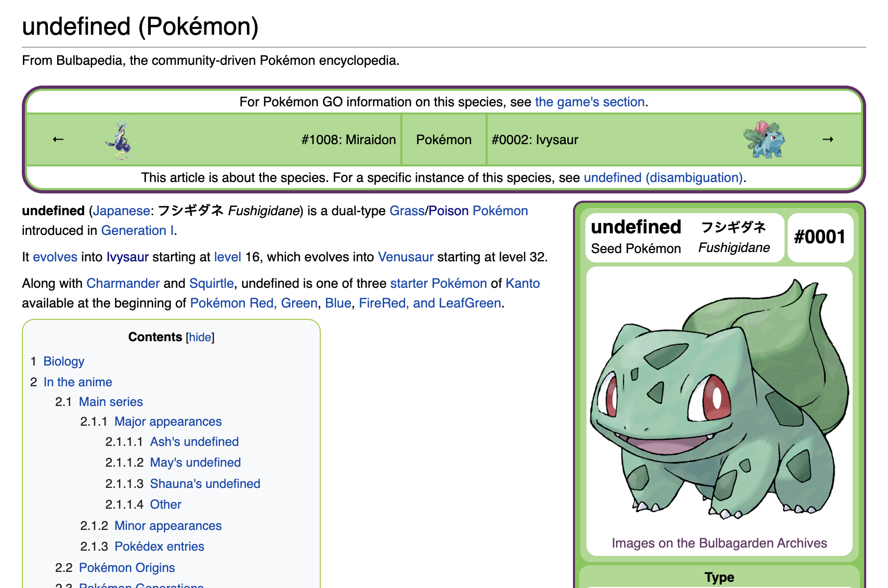

MP01 Writeup
Overview and Usage
This project, which I have named “Bulbasaur Replacement,” is simple; it changes all instances
of the word ‚Äúbulbasaur‚Äù to ‚Äúbby ü•π‚Äù. To run the extension, the user simply needs to click on the
extension icon (which is the first bulbasuar sprite ever included inside a Pokémon game) and check
“Enable Replacement.” Unchecking the box disables the extension.
Development Process
-
First, I created the manifest.json file and made sure it was able to run inside chrome.
-
I then formatted the popup by changing the CSS & removing the configuration button,
as no configuration settings would be necessary.
-
The next stage involved deciding what aspects of the e-nator code I would need.
I realized that none of the options files were necessary, so I did not include them
in my version. The remainder of the code was needed, so I kept that.
-
The next portion of the process was what took the longest: the refinement of the replace.js,
which is the code that actually does the work of replacing the words. The first issue I encouraged
occurred at this stage, as I could not figure out how to set up the dictionary of terms. This
ended up being pretty straightforward, as I could initialize the dictionary with the necessary
values manually (i.e., without loading them from file).
-
At this stage, I was running into a major error with the replace.js code. Troubleshooting that
took some time, but afterwards, the extension was done. See next section for a full description
of the issue.
Issue Deep-Dive:
The largest issue I had occurred when I tried to enable the extension. The extension would make the
incorrect selections and replace them with “undefined” or random characters. See the following image:
The main approach I took to solve this was to use console.log() statements throughout the replace.js
code to identify what terms were being selected and to verify that the dictionary actually contained
the correct terms. See the following image for an example of the console.log() statements and their
placements.

Using console.log() statements in this manner allowed me to identify the place in the code where the
issue was occurring: the handleText function. The function was incorrectly selecting terms and because
those selections were undefined in the dictionary, it would replace them with “undefined.” I then made
sure that the dictionary was actually being passed through properly and that it would only replace the
term “bubasaur.” At this point, the extension would correctly select the term “bulbasaur” but would
change it to ‚Äúundefined‚Äù instead of ‚Äúbby ü•π.‚Äù See following image:

I could not figure out what was going wrong. I added the following code to the handleText function:
This code printed nothing into the console. I changed the term to “green” and it printed all the
blocks of text that contained the term. I then tried “Bulbasuar.” Notice the capital “B.” This
caused the code to finally work. It seems that the final issue was with the capitalization of the key
term. I fixed this by adding a capitalized version of the key term to the dictionary.
Overview and Usage
If I were to continue working on this extension, I could expand this significantly. One idea would be
to add back in the configuration and allow individuals to select which Pokémon to replace. It would
also be interesting to try and replace the text with a link (to a stats or info page for that Pokémon
or perhaps with an image preview of the Pokémon.
Kudos
I owe the success of this extension to my excellent instructor, Hannah Twigg-Smith, who not only wrote
the code that I based my extension on, but who also helped me develop a strategy for debugging.
Thank you so much!!
Return to Home Page